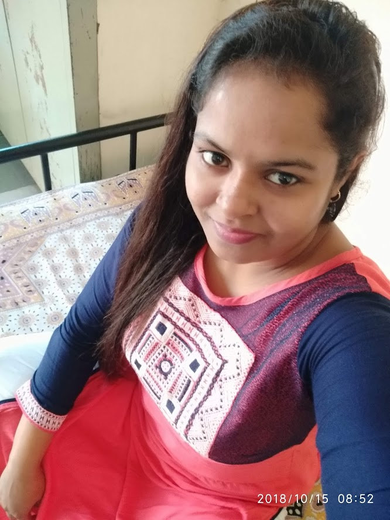

RESUME

Name : Deepanshi Tyagi
Address : Vill - Peer Nagar Soodna, Hapur, U.P.
Email : deepatyagi458@gmail.com
Mobile No. : 8630148429
Career Objective
I am Looking Forward towards a Challenging role in a Organization, Which Calls for in depth involvement & Participation in the decision of the Organization also keen to utilize my Technical Skills acquire through academics & Practical Experience.
Skills:
Excellent Inter-personnel Skills.
Programming Languages.
Academic Profile:
High School Examination from CBSE Board.
Intermediate Examination from UP Board.
Graduation from CCS University. (Pursuing)
Technical Qualification:
CTS in COPA from NCVT in 2017-18
CITS (Computer Software Application) in 2018-19 from NSTI , INDORE , M.P.
CCC from NIELIT .
TALLY ERP9 (Certificate) in 2020
Advance Excel (Certificate) in 2021
Pursuing O LEVEL
Experience:
Three Years Four months Teaching Experience in CITY HEART PUBLIC SCHOOL , HAPUR
Two Months Experience (GUEST FACULTY COPA) in NSTI , INDORE
Took Online Classes During COVID-19 (NSTI , INDORE)
19 Months Experience in VIDYA GROUP OF INSTITUTION & IT - SERVICES
Personal Data:
Date of Birth : 07/10/1996
Father’s Name : Mr. Narendra Tyagi
Gender : Female
Nationality : Indian
Marital Status : Unmarried
Proficiency : English, Hindi
Hobbies : Listening Music
Declaration:
I hereby declare that the information furnished above is true to the best of my knowledge.
Place: - HAPUR
Date: - 09 Nov 2022
(DEEPANSHI TYAGI)